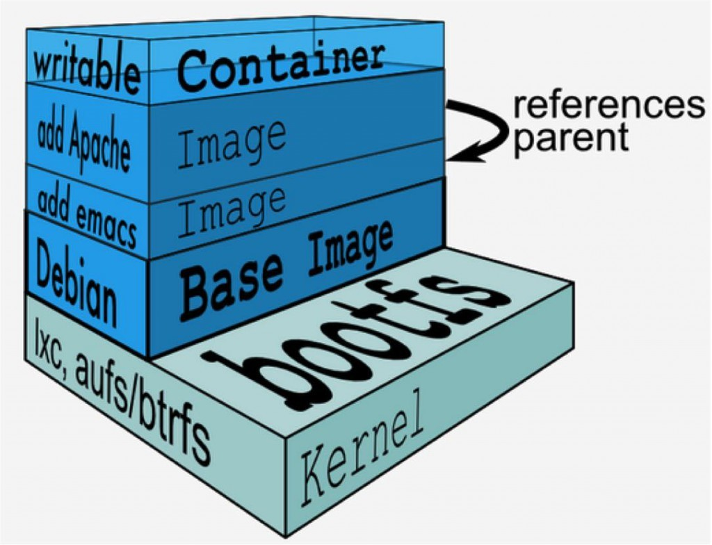
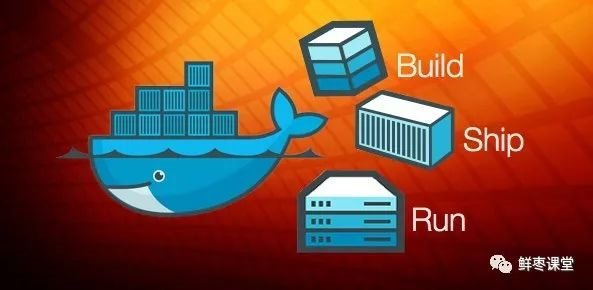
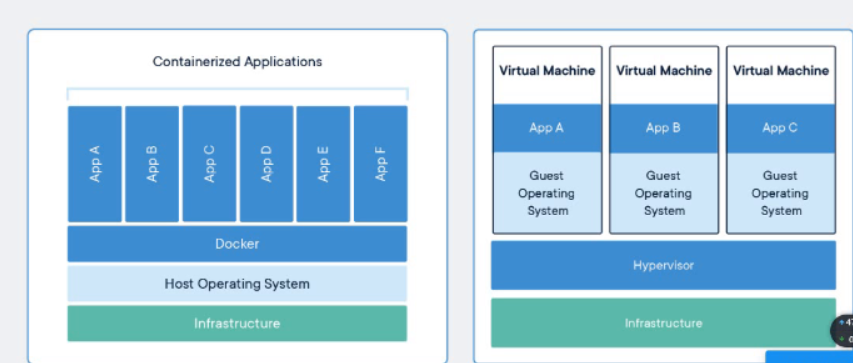
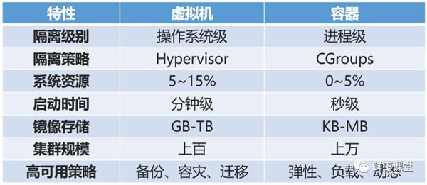

Docker
官方网站：
https://www.docker.com/
https://www.docker.com/resources/what-container介绍
Enterprise Container Platform | Docker–》企业容器平台
Docker - Build, Ship, and Run Any App, Anywhere –》构建、装载、在任何的地方运行任何的app
Securely build, share and run any application, anywhereEnterprise Container Platform for High-Velocity Innovation 高效创新的企业容器平台
概念
优点：
- 标准： Docker创建了容器的行业标准，因此它们可以随处携带
- 轻量级：容器共享机器的操作系统内核，因此不需要每个应用程序的操作系统，从而提高服务器效率并降低服务器和许可成本
- 安全：应用程序在容器中更安全，Docker提供业界最强大的默认隔离功能
时间都是使用的是操作系统里的时间
物理机、虚拟机和容器的区别
- 物理机：
- 虚拟机：
- 容器：
- 通过上面这三张抽象图，我们大概可以通过类比概括出： 容器虚拟化的是操作系统而不是硬件，容器之间是共享同一套操作系统资源的。虚拟机技术是虚拟出一套硬件后，在其上运行一个完整操作系统。因此容器的隔离级别会稍低一些。
- 物理机：
docker基本概念
Docker包括三个基本概念：
镜像（Image） –》软件 镜像：实现某个功能的代码模块（别人配置好的一个程序或者很多程序的一个环境）
镜像=一个os+一个程序或者多个程序。—》人家已经做好的套餐盒饭。
容器（Container）—》进程
仓库（Repository） –》很多的镜像文件 
安装好docker—》获得镜像—》启动容器
什么是docker
Docker是世界领先的软件容器平台。
Docker使用Google公司推出的Go语言进行开发实现，基于Linux内核的cgroup，namespace，以及AUFS类的UnionFS等技术，对进程进行封装隔离，属于操作系统层面的虚拟化技术。 由于隔离的进程独立于宿主和其它的隔离的进程，因此也称其为容器。Docke最初实现是基于LXC。
Docker能够自动执行重复性任务，例如搭建和配置开发环境，从而解放了开发人员以便他们专注在真正重要的事情上：构建杰出的软件。
用户可以方便地创建和使用容器，把自己的应用放入容器。容器还可以进行版本管理、复制、分享、修改，就像管理普通的代码一样。
需要注意，Docker本身并不是容器，它是创建容器的工具，是应用容器引擎。
docker两句口号
第一句，是“Build, Ship and Run”。

也就是，“搭建、发送、运行”，三板斧。
举个例子：
我来到一片空地，想建个房子，于是我搬石头、砍木头、画图纸，一顿操作，终于把这个房子盖好了。
结果，我住了一段时间，想搬到另一片空地去。这时候，按以往的办法，我只能再次搬石头、砍木头、画图纸、盖房子。
但是，跑来一个老巫婆，教会我一种魔法。
这种魔法，可以把我盖好的房子复制一份，做成“镜像”，放在我的背包里。

等我到了另一片空地，就用这个“镜像”，复制一套房子，摆在那边，拎包入住。

Docker的第二句口号就是：“Build once，Run anywhere（搭建一次，到处能用）”。
刚才例子里面，那个放在包里的“镜像”，就是Docker镜像。而我的背包，就是Docker仓库。我在空地上，用魔法造好的房子，就是一个Docker容器。
说白了，这个Docker镜像，是一个特殊的文件系统。它除了提供容器运行时所需的程序、库、资源、配置等文件外，还包含了一些为运行时准备的一些配置参数（例如环境变量）。镜像不包含任何动态数据，其内容在构建之后也不会被改变。
也就是说，每次变出房子，房子是一样的，但生活用品之类的，都是不管的。谁住谁负责添置。
每一个镜像可以变出一种房子。那么，我可以有多个镜像呀！
也就是说，我盖了一个欧式别墅，生成了镜像。另一个哥们可能盖了一个中国四合院，也生成了镜像。还有哥们，盖了一个非洲茅草屋，也生成了镜像。。。
这么一来，我们可以交换镜像，你用我的，我用你的，岂不是很爽？
于是乎，就变成了一个大的公共仓库。
负责对Docker镜像进行管理的，是Docker Registry服务（类似仓库管理员）。
不是任何人建的任何镜像都是合法的。万一有人盖了一个有问题的房子呢？
所以，Docker Registry服务对镜像的管理是非常严格的。
最常使用的Registry公开服务，是官方的Docker Hub，这也是默认的Registry，并拥有大量的高质量的官方镜像。
容器与虚拟机（VM）两者是可以共存的
docker镜像
容器：将镜像里的代码运行起来的一个地方。
官方：https://hub.docker.com
仓库—》存放很多镜像的一个地方。—》时速云
https://www.aliyun.com/product/containerservice?utm_content=se_1248079 阿里云镜像（Image）——一个特殊的文件系统
- 操作系统分为内核和用户空间。对于Linux而言，内核启动后，会挂载root文件系统为其提供用户空间支持。而Docker镜像（Image），就相当于是一个root文件系统。
- Docker镜像是一个特殊的文件系统，除了提供容器运行时所需的程序、库、资源、配置等文件外，还包含了一些为运行时准备的一些配置参数（如匿名卷、环境变量、用户等）。 镜像不包含任何动态数据，其内容在构建之后也不会被改变。
- Docker设计时，就充分利用Union FS的技术，将其设计为分层存储的架构。 镜像实际是由多层文件系统联合组成。
- 镜像构建时，会一层层构建，前一层是后一层的基础。每一层构建完就不会再发生改变，后一层上的任何改变只发生在自己这一层。比如，删除前一层文件的操作，实际不是真的删除前一层的文件，而是仅在当前层标记为该文件已删除。在最终容器运行的时候，虽然不会看到这个文件，但是实际上该文件会一直跟随镜像。因此，在构建镜像的时候，需要额外小心，每一层尽量只包含该层需要添加的东西，任何额外的东西应该在该层构建结束前清理掉。
- 分层存储的特征还使得镜像的复用、定制变的更为容易。甚至可以用之前构建好的镜像作为基础层，然后进一步添加新的层，以定制自己所需的内容，构建新的镜像。
docker容器
容器（Container）——镜像运行时的实体
- 镜像（Image）和容器（Container）的关系，就像是面向对象程序设计中的类和实例一样，镜像是静态的定义，容器是镜像运行时的实体。容器可以被创建、启动、停止、删除、暂停等 。
- 容器的实质是进程，但与直接在宿主执行的进程不同，容器进程运行于属于自己的独立的命名空间。前面讲过镜像使用的是分层存储，容器也是如此。
- 容器存储层的生存周期和容器一样，容器消亡时，容器存储层也随之消亡。因此，任何保存于容器存储层的信息都会随容器删除而丢失。
- 按照Docker最佳实践的要求，容器不应该向其存储层内写入任何数据 ，容器存储层要保持无状态化。所有的文件写入操作，都应该使用数据卷（Volume）、或者绑定宿主目录，在这些位置的读写会跳过容器存储层，直接对宿主（或网络存储）发生读写，其性能和稳定性更高。数据卷的生存周期独立于容器，容器消亡，数据卷不会消亡。因此， 使用数据卷后，容器可以随意删除、重新run，数据却不会丢失。
docker仓库
仓库（Repository）——集中存放镜像文件的地方
- 镜像构建完成后，可以很容易的在当前宿主上运行，但是， 如果需要在其它服务器上使用这个镜像，我们就需要一个集中的存储、分发镜像的服务，Docker Registry就是这样的服务。
- 一个Docker Registry中可以包含多个仓库（Repository）；每个仓库可以包含多个标签（Tag）；每个标签对应一个镜像。所以说：镜像仓库是Docker用来集中存放镜像文件的地方类似于我们之前常用的代码仓库。
- 通常，一个仓库会包含同一个软件不同版本的镜像，而标签就常用于对应该软件的各个版本 。我们可以通过<仓库名>:<标签>的格式来指定具体是这个软件哪个版本的镜像。如果不给出标签，将以latest作为默认标签。
这里补充一下Docker Registry公开服务和私有Docker Registry的概念：
- Docker Registry公开服务是开放给用户使用、允许用户管理镜像的Registry服务。一般这类公开服务允许用户免费上传、下载公开的镜像，并可能提供收费服务供用户管理私有镜像。
- 最常使用的Registry公开服务是官方的Docker Hub ，这也是默认的Registry，并拥有大量的高质量的官方镜像，网址为：hub.docker.com/ 。在国内访问Docker Hub可能会比较慢国内也有一些云服务商提供类似于Docker Hub的公开服务。
- 除了使用公开服务外，用户还可以在本地搭建私有Docker Registry 。Docker官方提供了Docker Registry镜像，可以直接使用做为私有Registry服务。开源的Docker Registry镜像只提供了Docker Registry API的服务端实现，足以支持Docker命令，不影响使用。但不包含图形界面，以及镜像维护、用户管理、访问控制等高级功能。
谈谈：Build，Ship，and Run
如果你搜索Docker官网，会发现如下的字样：“Docker - Build, Ship, and Run Any App, Anywhere”。那么Build，Ship，and Run到底是在干什么呢？
- Build（构建镜像）：镜像就像是集装箱包括文件以及运行环境等等资源。
- Ship（运输镜像）：主机和仓库间运输，这里的仓库就像是超级码头一样。
- Run （运行镜像）：运行的镜像就是一个容器，容器就是运行程序的地方。
- Docker运行过程也就是去仓库把镜像拉到本地，然后用一条命令把镜像运行起来变成容器。所以，我们也常常将Docker称为码头工人或码头装卸工，这和Docker的中文翻译搬运工人如出一辙。


问题
Docker和Vmware虚拟机的区别？
简单来说： 容器和虚拟机具有相似的资源隔离和分配优势，但功能有所不同，因为容器虚拟化的是操作系统，而不是硬件，因此容器更容易移植，效率也更高。
重量级的虚拟化软件：
- vmware–>美国的虚拟化厂商–》商业公司
- kvm—》linux下的虚拟化软件—》跟vmware很相似–》centos7–》开源的，免费的
- xen—》比较早的虚拟化软件
- virtual box —》oracle 公司的 —》vmware的workstation
轻量级的虚拟化
- docker —-》轻量级的虚拟化—》全面的使用
docker容器可以限制资源的使用：cpu、内存、磁盘io等

容器
容器是应用层的抽象，它将代码和依赖关系打包在一起。多个容器可以在同一台机器上运行，并与其他容器共享操作系统内核，每个容器在用户空间中作为独立进程运行。容器占用的空间比VM少（容器映像的大小通常为几十MB），可以处理更多的应用程序，并且需要更少的VM和操作系统虚拟机器
虚拟机（VM）是物理硬件的抽象，将一台服务器转变为多台服务器。管理程序允许多台VM在单台机器上运行。每个VM都包含操作系统的完整副本，应用程序，必要的二进制文件和库 - 占用数十GB。虚拟机也可能很慢启动。两者对比图
- 传统虚拟机技术是虚拟出一套硬件后，在其上运行一个完整操作系统，在该系统上再运行所需应用进程；而容器内的应用进程直接运行于宿主的内核，容器内没有自己的内核，而且也没有进行硬件虚拟。因此容器要比传统虚拟机更为轻便。

- 
容器与虚拟机 (VM) 总结

- 容器是一个应用层抽象，用于将代码和依赖资源打包在一起。 多个容器可以在同一台机器上运行，共享操作系统内核，但各自作为独立的进程在用户空间中运行 。与虚拟机相比， 容器占用的空间较少（容器镜像大小通常只有几十兆），瞬间就能完成启动 。
- 虚拟机（VM）是一个物理硬件层抽象，用于将一台服务器变成多台服务器。 管理程序允许多个VM在一台机器上运行。每个VM都包含一整套操作系统、一个或多个应用、必要的二进制文件和库资源，因此占用大量空间。而且VM启动也十分缓慢 。
通过Docker官网，我们知道了这么多Docker的优势，但是大家也没有必要完全否定虚拟机技术，因为两者有不同的使用场景。虚拟机更擅长于彻底隔离整个运行环境。例如，云服务提供商通常采用虚拟机技术隔离不同的用户。而Docker通常用于隔离不同的应用 ，例如前端，后端以及数据库。
完全虚拟化和半虚拟化
docker里的容器是如何隔离的，它的底层原理是什么？
一个容器对应操作系统里的一个进程，进程和进程之间是隔离的，是linux 内核管控的。
一个容器对应一个name space，里面的内容和别的name space里的内容可以一样也可以不一样。
使用Namespaces实现了系统环境的隔离，Namespaces允许一个进程以及它的子进程从共享的宿主机内核资源（网络栈、进程列表、挂载点等）里获得一个仅自己可见的隔离区域，让同一个Namespace下的所有进程感知彼此变化，对外界进程一无所知，仿佛运行在一个独占的操作系统中；使用CGroups限制这个环境的资源使用情况，比如一台16核32GB的机器上只让容器使用2核4GB。使用CGroups还可以为资源设置权重，计算使用量，操控任务（进程或线程）启停等；
为什么要用Docker
Docker的镜像提供了除内核外完整的运行时环境，确保了应用运行环境一致性，从而不会再出现“这段代码在我机器上没问题啊”这类问题；——一致的运行环境
可以做到秒级、甚至毫秒级的启动时间。大大的节约了开发、测试、部署的时间。——更快速的启动时间
避免公用的服务器，资源会容易受到其他用户的影响。——隔离性
善于处理集中爆发的服务器使用压力；——弹性伸缩，快速扩展
可以很轻易的将在一个平台上运行的应用，迁移到另一个平台上，而不用担心运行环境的变化导致应用无法正常运行的情况。——迁移方便
使用Docker可以通过定制应用镜像来实现持续集成、持续交付、部署。——持续交付和部署
docker优势：
容器比虚拟机更加节省资源，速度更加快（启动、关闭、新建、删除）
互联网企业都使用容器：
京东：618 –》用户暴增
快速扩容–》快速回收
低成本
容器里的数据是保存在哪里的？
/var/lib/docker/containers/
docker容器是一个进程，进程是工作内存里的，如果进程被杀死都导致数据丢失如果关闭docker服务会导致所有的容器停止服务。
如果把容器停止，容器里的数据还有吗？–》有
重新启动容器还是有数据
##